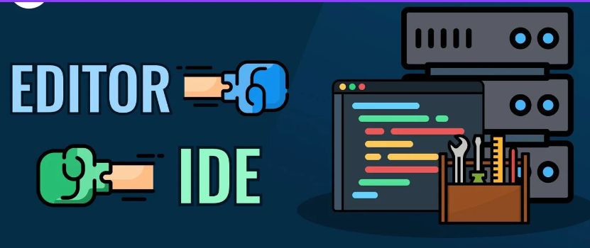
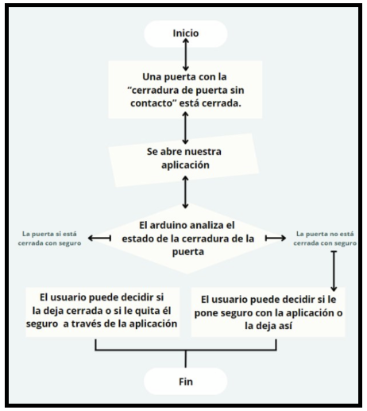

FUNDAMENTO CAE
SESIÓN 17 (14-05-2024)

El Arduino IDE es la plataforma principal para programar placas Arduino. Su interfaz está
diseñada para ser simple y accesible, permitiendo a los usuarios escribir, cargar y depurar
programas fácilmente. A continuación se describen los componentes principales del Arduino IDE:
Barra de Menús:Situada en la parte superior de la ventana, incluye opciones como:
- Archivo: dsadadPermite crear, abrir, guardar y cerrar sketches (programas de Arduino).
- Editar: Facilita operaciones como cortar, copiar, pegar, buscar y reemplazar texto en el código.
- Boceto: Utilizado para verificar, compilar y cargar el código en la placa Arduino.
- Herramientas: Permite seleccionar la placa Arduino, configurar el puerto serie y otras opciones relevantes.
- Ayuda: Proporciona acceso a la documentación y soporte de Arduino.
SESIÓN 18 (15-05-2024)

El diagrama de flujo describe el proceso de una cerradura de puerta sin contacto utilizando
tecnologías como RFID, NFC o Bluetooth para autenticación. Comienza con la inicialización y
espera de señales de autenticación. Luego, detecta la señal del dispositivo cercano, lee los
datos de la tarjeta o dispositivo, y verifica la autenticidad comparando con la base de datos
interna. Si la autenticación es válida, se desbloquea la puerta activando el mecanismo
correspondiente, asegurando un acceso seguro y eficiente sin necesidad de llave física.